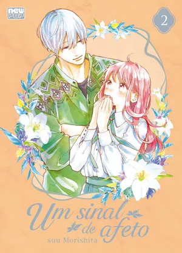

Um Sinal de Afeto
Um Sinal de Afeto (Yubisaki to Renren) é um mangá shōjo escrito e ilustrado pela dupla Suu Morishita.

Sinopse Oficial:
“Eu quero que isso seja paixão…Eu quero que seja.” Yuki é uma garota que frequenta a faculdade e, certo dia quando estava com problemas, é ajudada por seu veterano, Itsuomi, que lida com Yuki de forma natural apesar de ela não conseguir ouvir por ter uma deficiência auditiva. Aos poucos, ela começa a ter sentimentos por esse rapaz que, pouco a pouco, começa a mostrar um mundo diferente a ela…?! Este é o primeiro volume da história de um amor puro entre Yuki, que possui deficiência auditiva, e seu veterano Itsuomi, que mudou o seu mundo.
Informações:
A NewPOP lança em maio Um Sinal de Afeto (Yubisaki to Renren), mangá escrito e ilustrado pela dupla de autoras Suu Morishita. Publicada originalmente em capítulos a partir de 2019 pela Kodansha, a obra gerou 13 volumes compilados até o momento no Japão. Uma adaptação para série de anime, produzida pelo Ajia-do Animation Works, estreou este ano, com uma temporada de 12 episódios.